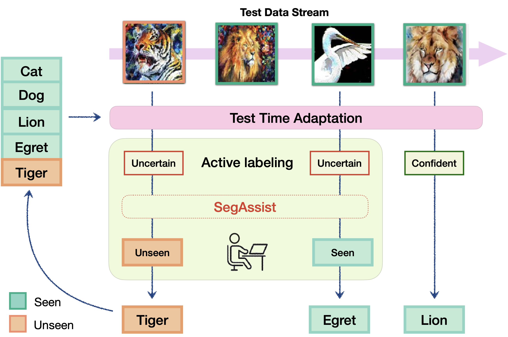
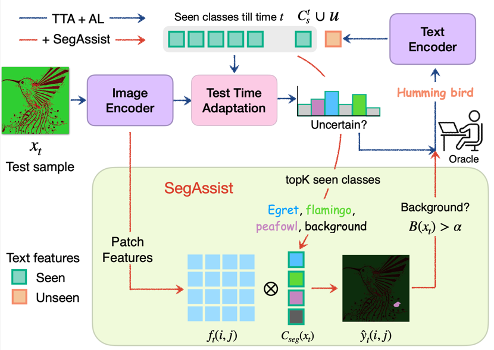
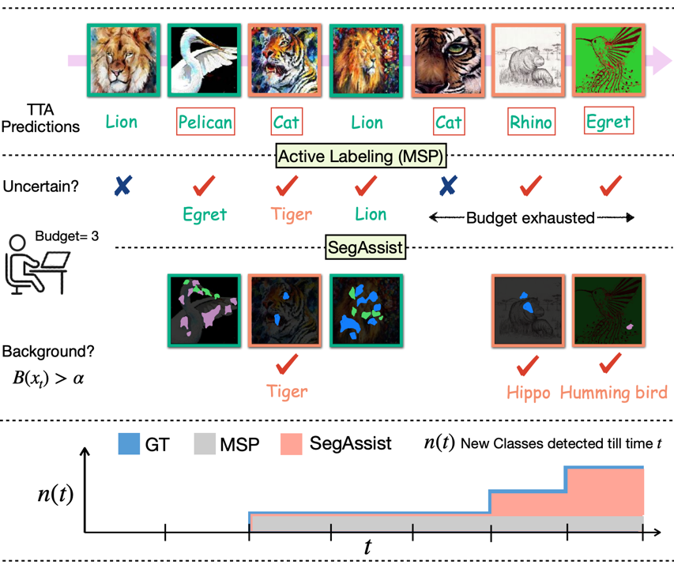

In dynamic environments, unfamiliar objects and distribution shifts are often encountered which challenge the generalization abilities of deployed trained models. This work addresses Incremental Test Time Adaptation (ITTA) of Vision-Language Models (VLMs), tackling scenarios where unseen classes and unseen domains continuously appear during testing. Unlike traditional TTA approaches, where the test stream comes only from a predefined set of classes, our framework allows models to adapt simultaneously to both covariate and label shifts, actively incorporating new classes as they emerge. Towards this goal, we establish a new benchmark for ITTA, integrating single-image TTA methods for VLMs with active labeling techniques that query an oracle for samples potentially representing unseen classes during test time. We propose a segmentation assisted active labeling module, termed SegAssist, which is training-free and repurposes the VLM's segmentation capabilities to refine active sample selection, prioritizing samples likely to belong to unseen classes. Extensive experiments on several benchmark datasets demonstrate the potential of SegAssist to enhance the performance of VLMs in real-world scenarios, where continuous adaptation to emerging data is essential.
Consider a model deployed in the real world, navigating a dynamic environment where it encounters familiar objects in unfamiliar settings and new objects it has never seen before. Traditional TTA methods handle covariate shifts but cannot accommodate dynamically emerging new classes. We introduce ITTA, a protocol that requires the model to simultaneously:

The table below situates ITTA among closely related research directions. ITTA is the only setting that handles all of: training-free adaptation, single-image testing, covariate shift, label shift, and a growing classification space \(\mathcal{C}_s + \mathcal{C}_u\).
| Training-free | TTA | Covariate shift | Label shift | Single image | Task space | Methods |
|---|---|---|---|---|---|---|
| ✗ | ✓ | ✓ | ✗ | ✗ | \(\mathcal{C}_s\) | TENT, CoTTA, ROID |
| ✓ | ✓ | ✓ | ✗ | ✓ | \(\mathcal{C}_s\) | TPT, TDA, DPE |
| ✗ | ✓ | ✓ | ✓ | ✗ | \(\mathcal{C}_s+1\) | Open-world TTA |
| ✓ | ✗ | ✗ | ✓ | ✗ | \(\mathcal{C}_s+\mathcal{C}_u\) | Class Incremental Learning |
| ✓ | ✓ | ✓ | ✓ | ✓ | \(\mathcal{C}_s+\mathcal{C}_u\) | Proposed ITTA (Ours) |
Table 1. Comparison of the proposed ITTA framework with existing research directions.

For an uncertain sample \(x_t\), let \(\text{top}K(x_t)\) denote the top-\(K\) class names predicted by CLIP. We define \(\mathcal{C}_\text{seg}(x_t) = \text{top}K(x_t) \cup \{\text{"background"}\}\). Using patch features \(f_t(i,j)\) from the last self-attention layer, each patch is assigned a class label:
\begin{align} \hat{y}_t(i,j) = \arg\max_{c \,\in\, \mathcal{C}_\text{seg}(x_t)} \langle f_t(i,j),\, t_c \rangle \end{align}
where \(t_c\) is the text embedding of class \(c\). Patch predictions are upsampled via bilinear interpolation to produce the full segmentation map \(S(x_t)\).
We compute the proportion of pixels classified as "background":
\begin{align} B(x_t) = \frac{1}{|S(x_t)|} \sum_{i=1}^{|S(x_t)|} \mathbb{I}\bigl[S_i(x_t) = \text{"background"}\bigr] \end{align}
A sample \(x_t\) is selected for oracle querying only if \(B(x_t) > \alpha\), with \(\alpha = 0.95\). This ensures the limited active-labeling budget is spent primarily on genuinely novel, unseen-class samples. SegAssist requires no additional training and adds negligible computation overhead, as patch features are already computed during CLIP inference.
We propose a novel metric, Incremental Class Detection Delay (ICDD), to quantify how timely an ITTA system discovers new classes. It compares the ground-truth class introduction curve \(n_\text{gt}(t)\) with the detected-class curve \(n_\text{det}(t)\) over normalized time \(t \in [0,1]\):
\begin{align} \text{ICDD} = \text{AUC}(n_\text{gt}(t)) - \text{AUC}(n_\text{det}(t)) \end{align}
A lower ICDD (closer to zero) means the system detects new classes almost as soon as they appear. A higher ICDD indicates significant detection delay and consequent performance degradation. ICDD and Harmonic Mean (HM) accuracy are complementary: ICDD captures detection timeliness while HM measures classification correctness after detection.

We evaluate SegAssist by plugging it into three VLM-based TTA baselines: ZS-Eval (zero-shot CLIP), TDA (CVPR'24), and DPE (NeurIPS'24), combined with three active labeling strategies: Random, Entropy, and MSP. Experiments are on ImageNet-R, ImageNet-A, Clipart, and Painting (DomainNet), using CLIP ViT-B/16.
| Base TTA | Method | ImageNet-R | ImageNet-Adversarial | Clipart | Painting | ||||
|---|---|---|---|---|---|---|---|---|---|
| HM ↑ | ICDD ↓ | HM ↑ | ICDD ↓ | HM ↑ | ICDD ↓ | HM ↑ | ICDD ↓ | ||
| ZS-Eval | Random | 49.57 | 25.90 | 23.60 | 45.33 | 22.04 | 75.30 | 32.54 | 68.41 |
| Entropy | 59.89 | 21.99 | 21.11 | 43.83 | 48.25 | 61.88 | 64.34 | 43.89 | |
| MSP | 62.92 | 17.21 | 24.59 | 41.47 | 47.65 | 62.04 | 70.59 | 39.14 | |
| SegAssist | 64.05 | 16.01 | 23.94 | 41.89 | 49.08 | 61.20 | 71.21 | 38.56 | |
| TDA | Random | 53.33 | 25.90 | 16.58 | 45.33 | 22.54 | 75.30 | 32.66 | 68.41 |
| Entropy | 64.06 | 19.52 | 18.78 | 44.95 | 58.79 | 49.10 | 67.27 | 46.08 | |
| MSP | 70.38 | 13.25 | 19.27 | 43.93 | 58.99 | 50.68 | 68.83 | 39.31 | |
| SegAssist | 70.48 | 13.07 | 20.02 | 43.93 | 60.25 | 48.96 | 69.20 | 41.27 | |
| DPE | Random | 54.90 | 25.90 | 28.52 | 45.33 | 23.36 | 75.30 | 33.49 | 68.41 |
| Entropy | 0.19 | 56.05 | 4.44 | 57.88 | 15.50 | 80.27 | 0.00 | 81.81 | |
| MSP | 68.09 | 19.64 | 24.62 | 47.18 | 65.35 | 49.00 | 71.45 | 34.70 | |
| SegAssist | 69.39 | 16.38 | 33.42 | 44.98 | 65.49 | 49.00 | 72.40 | 33.12 | |
Comparison of Harmonic Mean (HM ↑) and Incremental Class Detection Delay (ICDD ↓) across active labeling and TTA methods on the ITTA benchmark, evaluated on ImageNet-R, ImageNet-Adversarial, Clipart, and Painting. SegAssist consistently improves over the MSP baseline across all settings.
@InProceedings{sreenivas2025segassist,
author = {Sreenivas, Manogna and Biswas, Soma},
title = {Segmentation Assisted Incremental Test Time Adaptation in an Open World},
booktitle = {British Machine Vision Conference},
year = {2025}
}